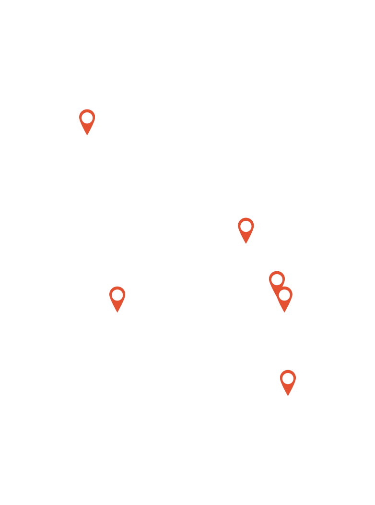
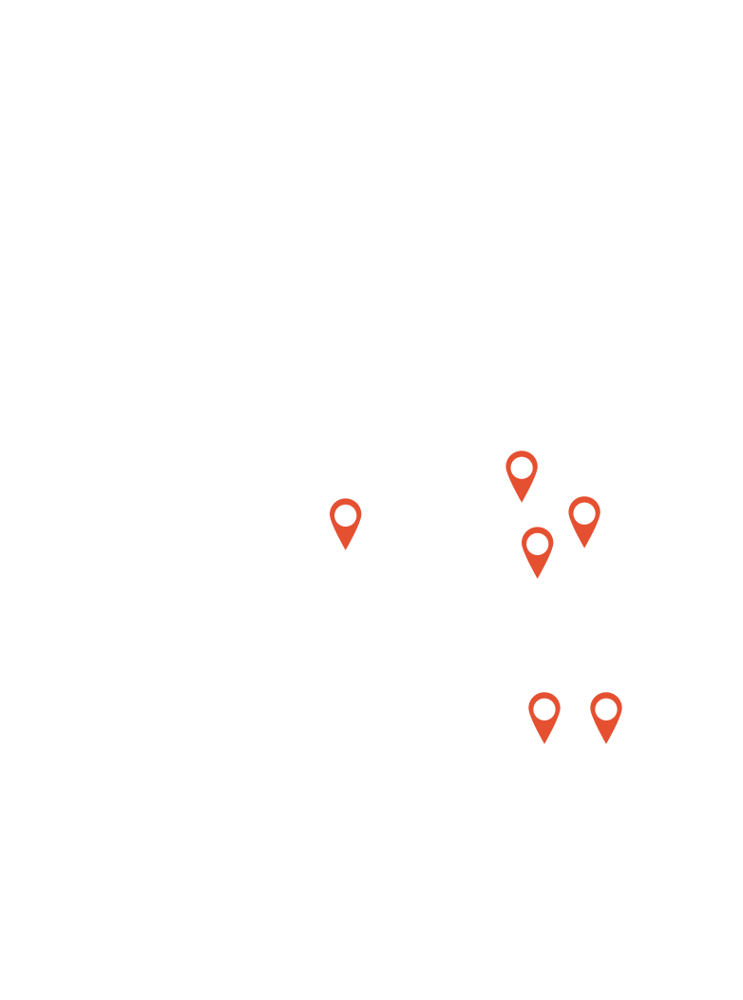
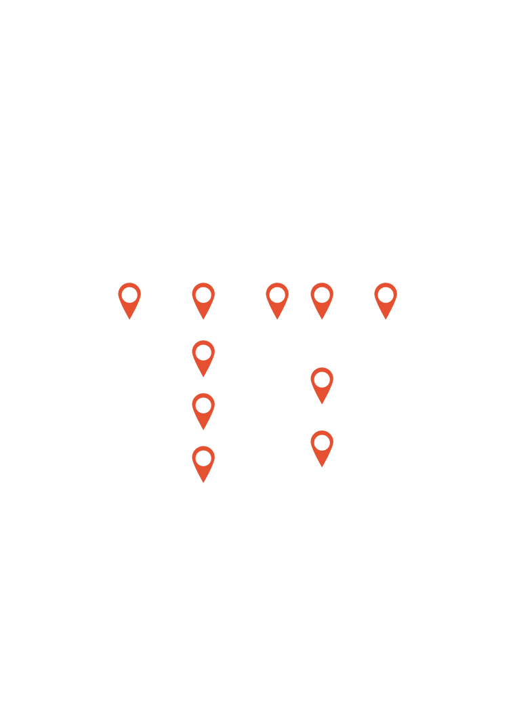

Share your Worst
memories.
Today's Topic
#미리미리 하세요
#지름신 발동
#민폐끝판왕
#Happy Bad Dream
Today's up
126
arrow_drop_down
Latest
비행하면서 만난 최악의 손님들
나는 에미렛에 메인플릿(main fleet)으로 입사했다. 나는 전혀 메인플릿이 되고 싶지 않았고 어떤 방식으로 선택 되었는지도 알수 없다. 그저 입사하고 트레이닝 받으려니까 우리 배치는 보잉777 과 작은 에어버스만 타게 될거라고 통보를 받았고, 심지어 그게 어떤건지도 잘 모른채로 트레이닝을 마쳤는데 우리는 시범 비행 둘 다 턴이었다. 심지어 나는 그 악명높


내가 걱정하는 대부분의 일은 절대 일어나지 않을 것들이다. -Tom Pretty-
대부분의 걱정은 전혀 쓸모 없는 것이다. 우리가 하는 걱정거리의 40% 는 절대 일어나지 않는 것이고 30% 는 이미 일어났거나 이제 와서 돌이키기에는 너무 늦은 일들에 대한 것이고 22% 는 사소한 것들에 대한 것들이고 4% 는 우리 힘으로는 도저히 바꿀 수 없는 일들에 대한 것이다. 그리고 4% 만이 우리가 대처할 수 있는 진짜 사건들에 대한 것이다. 우리가 걱


인종차별의 성지 런던
최악의 날이라고 해서, 그날의 시작까지 최악인 것은 아니다. 배낭여행을 떠나는 여자에게는 믿고 싶지 않지만 반드시 받아들여야하는 현실이 있다. 아닌 척 하지만 세상에는 여전히 성차별이 교활한 모습으로 곳곳에 존재한다. 심지어 인종차별은 무식한 모습으로 숨기지도 않고 다가온다. 이런 곳에 홀로 떨어진 집 없고, 돈 없고, 일행 없는 한국에서 온 20대의 여

헤어진 다음 날
눈을 떴다. 암막커튼 때문에 시커멓게 느껴지는 천장이 나를 집어삼킬 것 같았다. 눈뜨자마자 곧바로 죽고 싶은 기분이 들었다. 제대로 떠지지도 않는 눈꺼풀을 들어 올려 핸드폰을 집었다. 당연히 그에게서 온 메시지는 없었다. 있었다면 ‘뭘 어쩌라고 지 감정에 취해서 이딴 걸 보내고 앉았어?’ 하고 더 분노했을 일이지만 막상 없으니 그것대로 괘씸했다. 전날 열심

내가 지금 후회하는 것들
나는 올해로 44살이다 언제 이렇게 많이 먹은거지 시간 너무 빠른 거 아니야~ 요즘 같은 백세시대에 40살은 청춘이라지만ㅋㅋ 여태까지 살아오면서 느낀 것들이 있어서 글로 남겨 정리해보고자 몇 자 적어내립니다 나보다 어린 분들이 읽고 있다면 지금의 그 젊은 날이 얼마나 예쁜 건지 알고 상큼하고 발랄하게~ 지냈으면 좋겠어요 이런 말 너무 많이 들어서 지겹